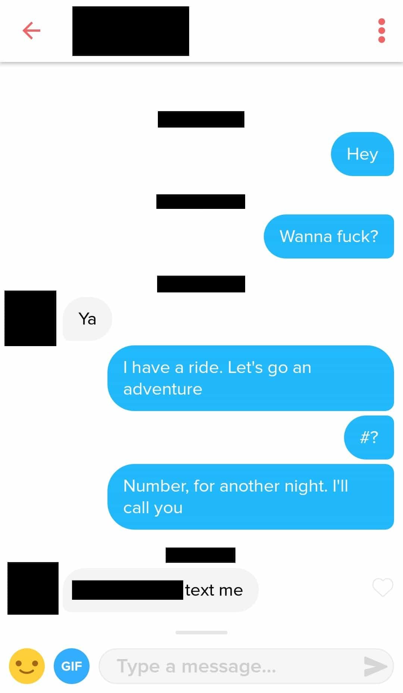

Papa Selo is a Croatian philosopher with an old soul. Aside from tending to his olive trees in the heart of Dalmatia, his singular passion is fjaka (doing absolutely nothing) in his village by the Adriatic sea.


For the last two years I’ve been living in Eastern Europe. For personal reasons, and much to my regret, I’ve had to make my way back home to Western Canada, if only temporarily. Things have certainly changed. Or have they? Perhaps the new sour taste in my mouth was just a result of reverse culture shock. Surely not all women around here are like gremlins, and not every guy I know was doing poorly in terms of Game. So I set out to think about this some more and pondered about something for which I’ve always had a sneaking suspicion. What about black guys?
Anecdotally, it has always been glaringly obvious that black guys pull the most around here, but is the effect statistically significant? What if I were a black guy? Originally, this article was entitled “5 Horrifying Reasons Masculine Men Must Avoid Victoria, British Columbia, Canada” and for good reason: it is the Satanic capital of Canada, literally. The number of transsexuals appearing on dating apps (when your preference is set to “women”) are sky-rocketing. “Anti-violence” and gender identity propaganda is in full-effect. The list goes on.

I decided to refrain from rushing off to write a damning article about why I hadn’t got laid in my first month home in a city that, for most heterosexual men, is no longer welcoming anyway. So after asking my one black friend if I was on to something, I decided to run an experiment to confirm if it really was the color of his skin or just his imagination. He agreed that it was a good idea.
I wondered, is it abnormally awesome to be a black guy in Victoria, Canada? What about Vancouver? Surrey, and Burnaby? I trawled through the internet to create my perfect profiles. I picked an average looking black guy from a random U.S. city. He was of medium build and appeared to have a fun social life.
I optimized his profile by including a picture demonstrating each of Mystery’s 5 Attraction Switches, i.e. leader of men (a picture on the football field with his teammates), protector of loved ones (a picture with family members and kid cousins), pre-selected by women (a picture with arms around two girls at a party), ability to emote (a picture with a big wide smile), and risk-taker (a picture in a red sports car).
I purchased a burner phone (the FIGO is great for this kind of thing, has apps and comes globally unlocked), created a new Google and Facebook account, signed up for Tinder Plus for a month and got to work. I set my Maximum Distance to 15 miles, Age Range to 18-55+. I swiped 50 times per day, for 7 days each in each of British Columbia’s four largest metropolitan areas (mentioned above), for 28 days.
I did the same thing and set up very similar pictures with a random white dude on my phone and compared. They each had empty bios. It’s obviously impossible to ensure equality of experimental conditions, but the fit was close enough. Because I could not effectively control for perceived quality of prospective matches, I simply swiped indiscriminately. That is, I swiped right every single time.
Experimental Black Guy (TJ) received 214 matches, a little more than 50 per week. Experimental White Guy (Brad) received 60 matches, or about 14 per week. That’s 28% of TJ’s total matches.
Openers were selected with a random number generator, and consisted of:
TJ’s matches responded at least once to approximately 50% of all openers (105 responses).
TJ managed to number close 10% of his total matches, or 1/5th of the girls who replied. He got phone numbers and set up dates with 21 of his matches. I unmatched the girls as soon as I received their phone numbers. I did not store those numbers anywhere. OkCupid recently performed a large-scale data analysis showing that the response rate of white female recipients (90% of both TJ’s and Brad’s matches were white women) to black male messages was fairly low, at 21%, which was only 1% higher than for Indian males. White men, on the other hand, tend to have a response rate from white women of about 30%, or 10% higher than black men on the aggregate.

Brad’s matches responded at least once to 25% of all openers (or 15 matches, which is more or less what you’d expect if this were OkCupid). This, however, was half of TJ’s response rate.
Over the course of the month, three of Brad’s matches agreed to go on a date and provided their phone numbers. That the close ratios were similar was likely a good sign that the profile pictures and openers were sufficiently optimized. The major differences, however, rested in the response rate (to statistically identical openers) and in the total number of matches.
Ultimately, TJ had 700% more potential dates than Brad. I say “potential” here because I did not keep the numbers long enough to record flakes, given that I was the one ghosting.
The best opener was “Wanna fuck?”, which made up most of the conversations that for TJ ended in a number close. No woman responded to Brad when he used this opener. The most straightforward close was by TJ, who used that same line, resulting in a reply the next day consisting of the girl’s phone number and the message “Ya…text me”. She was a certifiable 9 out of 10.

Although the experiment did not control for hotness of the girl, and likely many other confounding influences, much can be learned. Did girls match with TJ more often because less attractive girls think that black guys are more accessible? Possibly, but from personal observation, and hundreds of anecdotes and observations over the years, I very much doubt that. I’ve always seen black guys hanging out with the hottest girls in town, and the matches that our Experimental Black Guy was getting were fairly high quality in terms of physical attractiveness.
There was also the fact that women were more receptive to the more sexually aggressive openers when sent by the black guy, such as “Wanna fuck?”. One possible explanation is that explicit sexual advances from black guys come off as humorous because they already stand out as it is, allowing the opener to function as if it were an act of peacocking as opposed to a line that signaled thirsty desperation.
Similarly, making friends with a black guy seems to send a strongly positive social signal to peers, especially in a very Left Wing virtue and diversity-obsessed society such as in Western Canada. Even if your matches don’t fuck right away, you’ll be sucked into their Social Circle like a vortex in a gravity well.
Another, perhaps less speculative reason, is that black guys really are just viscerally more attractive to the predominantly white European population of women in this part of the world. There is definitely some highly-regarded scientific evidence to suggest that genetic opposites attract. This, in combination with the low population of black men in this region, and the current global cultural milieu favoring minorities in popular culture, is probably the best explanation.
Being black in Victoria, Canada is a pussy goldmine. Being black in Greater Vancouver is likely just as awesome. I even got a few matches from Port Angeles, in Washington State, and they responded with the same level of excitement and fervor.
As for Brad’s prospective mating opportunities? Increasingly doubtful. Brad’s profile was relatively average, but he was definitely a Chad, just like TJ. If Brad is only getting a handful of dates on Tinder per month, can the average white guy hope to do any better?
White men, it seems, are becoming the new Indian Race Trolls of Western Canada. It’s just better to leave and date foreign women, I suppose. Or is the lesson in all this that we should ditch our phones, live out our lives more authentically, and meet women during the day, on their terms?
In the end, if you are a black guy and are considering the move to Western Canada, or never stopped to consider whether it was worth it, it’s pretty clear that now more than ever is the best time to follow through with that move. You’ll definitely be drowning in pussy in no time at all, and if you don’t feel like moving to Japan, or being a foreigner in a strange country, this might actually be one of the better choices.
Read Next: 7 Reasons Why Approaching Girls In Real Life Beats Tinder Hands Down